Introduction
Music has changed considerably throughout the ages, but the one aspect that has remained constant is its popularity and ubiquitousness in culture. Every person has their own taste in music and numerous different genres of music have been created to satisfy these unique interests. While one person can enjoy the heavy thrills associated with metal or rock, another can relax with soothing sounds of classical Mozart floating gently through the air. With the advent of applications like Spotify, music has become more accessible to the general public. People now have over 50 million songs at the tip of their fingers and this number is only increasing (Webster 1).
Due to these streaming services, there has been a dramatic shift in people’s preferences as well as the way they consume music. Studies show that the average user discovers nearly 27 new artists per month on streaming platforms and that the adoption of these services increases music consumption by nearly 50% across all platforms (Bronnenberg, Datta and Knox, 3).
Problem
By analyzing and understanding the structure of popular songs today, we hope to generate lyrics that would appeal to music consumers through a two step process. The first component involves accepting user input and classifying that input into a music genre. Then, based on the genre our model believes the listener is interested in, we employ a text-generation model that would provide sampled lyrics.
Genre classification is an inspiring academic problem as it is considered fairly difficult; even models trained on a million songs with audio and lyric data fail to achieve greater than 40% accuracy on ten genre classifications (Dawen Liang, Haijie Gu, and Brendan O’Connor, 2011). At the same time, recent advancements in the text generation process have made it possible to recreate human-like text in many different genres (Ghatt and Krahmer, 2018).
Data
Data Collection
We began by collecting names of approximately 100 artists for each of 5 genres from annual Billboard top artists charts from this millenium. The genres we focused on were Rap, Country, Rock, Pop and Hip-Hop/R&B. We deduped the lists against each other to ensure that each artist was only counted toward one genre. The genres and number of artists collected for each is below.
| Genre | Number of Artists |
|---|---|
| Country | 104 |
| Hip-Hop/R&B | 111 |
| Pop | 100 |
| Rap | 107 |
| Rock | 108 |
We then used the Genius API to collect the names and lyrics for the top 5 songs for the majority of these artists. An example of our dataset is below.
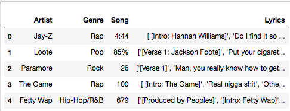Ultimately, we collected the lyrics to about 2500 songs from nearly 500 artists. The table below displays the breakdown of artists and songs by genre.
| Genre | Number of Artists | Number of Songs |
|---|---|---|
| Country | 103 | 515 |
| Hip-Hop/R&B | 109 | 537 |
| Pop | 99 | 495 |
| Rap | 76 | 380 |
| Rock | 108 | 540 |
Data Preprocessing
To prepare our dataset for classification, we had to process the lyrics that were returned from the Genius API calls. We started by removing the brackets from around each set of lyrics and removing extra punctuation. In order to prevent repetitive phrases or words from skewing word frequencies, different heuristics were employed to remove duplicate lyrics or phrases that were repeated multiple times(Fell and Sporleder, 2). Also, variations of the same word were transformed back to their base form. For example, one song might use the word ‘lovin’ and another might employ ‘loving’. In order to bring about some parsimony, these words would be converted to the base form of ‘loving’ in a process called lemmatization. The graphics below show sample lyrics before and after preprocessing.
Language of Genres
Across the nearly 2,500 songs we analyzed, we discovered that nearly 25,000 unique words were used. Dealing with such a large vocabulary set would lead to extremely sparse feature vectors. Also, we wanted to minimize the risks of overfitting that would occur if we worked in an extremely high dimensional space. To mitigate these risks, we decided to build a vocabulary that was smaller in size, but still captured the unique phrases and words that were used across the different genres (Fell and Sporleder 2).
To determine the feasibility of this, we explored the correlation between words and genres. We found that there was a great deal of overlap between the vocabularies of Rap and Hip-Hop/R&B. Additionally, the vocabularies of Rap and Hip-Hop/R&B were distinct from those of other genres, especially Rock.
We also found that approximately 50 of the Pop songs were in Spanish. This resulted in Spanish being highly correlated with the Pop genre. Even when only including English words, however, Pop still had a fairly distinct vocabulary. Based on the fact that each genre appears to have a unique vocabulary, we believed that using song lyrics for genre classification would be an appropriate approach.
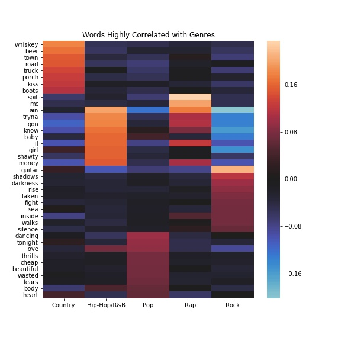Supervised Learning
After doing exploratory data analysis and discovering what words or phrases encapsulated a specific genre, we built a vocabulary set that consisted of the top hundred words or phrases from each genre. We then used this vocabulary to transform the lyrical data into features that could be used for the classification models.
In order to accomplish this goal, we used two different approaches. One consisted of simply counting the number of occurrences of each term in our vocabulary in the lyrics of a song. The other used the term-frequency inverse document frequency (TF-IDF) method.
In both approaches, we varied the gram length to gain an understanding of how this parameter affected the models’ performances. To provide some context, if the text consisted of “Today is a sunny day”, unigrams (or 1-grams) would consist of ‘Today’, ‘is’, ‘a’, ‘sunny’ and ‘day’. Bigrams would be a sequence that was composed of ‘Today is’, ‘is a’, ‘a sunny’, ‘sunny day’.
We also removed English stop words such as “the”, “and”, or “but”. Such words are common across most documents and provide little information about the content or structure of the text in question.
The models we tried were Logistic Regression, Random Forests, Linear SVC, and Multinomial Naive Bayes. Five-fold cross validation was used to determine the optimal hyper-parameters for each of the models. All the findings reported below are from the best performing models from each of the categories mentioned previously.
Logistic Regression
One of the models that was built was a Logistic Regression model. The main hyperparameter that was tuned via cross-validation was the regularization hyper-parameter, although we found that, when working with unigrams, we got the best results with default regularization.
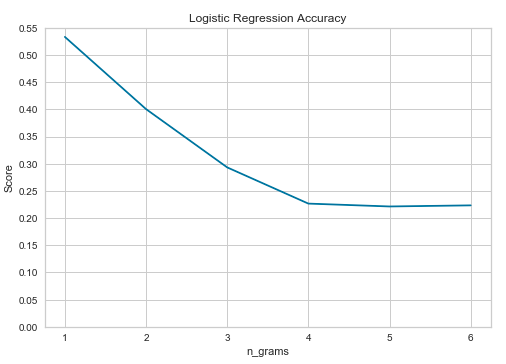The plot above shows how the tuned Logistic Regression model performed when varying the gram length. The model had an average accuracy rate of 52% when unigrams were used. There is a significant decrease in performance as n-grams length is increased. When bigrams are employed, the model accuracy drops down to nearly 41%. If trigrams or longer are used, the model bottoms out and levels at around a 22-23% accuracy rate. This is slightly better than random guessing (i.e with there being five genres, a random guess would be right 20% over the long haul).
It is possible to understand where the model performed well and in which genres it struggled to classify correctly by looking at the confusion matrix that was generated on a test set of 493 songs. The confusion matrix of the Logistic Regression model used for unigrams is displayed below.
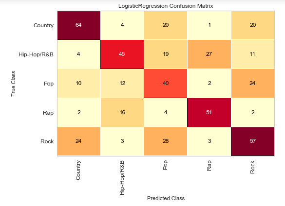In the test set, 257 of 493 songs were correctly classified, giving a model accuracy of 52%. Things get a little more interesting when we also look at precision and recall. Precision is defined as (True Positives / Total Predicted Positives) and seeks to determine what proportion of songs classified as a particular genre were actually from that genre. Recall, on the other hand, is defined as (True Positive / Total Actual Positive) and explains the proportion of songs from a given genre that are classified as being from that genre. A heatmap showing precision and recall by genre for this model is provided below. The F1 statistic seeks to balance the values obtained from precision and recall. It is most informative when the number of classes are poorly balanced, so it is less meaningful here.
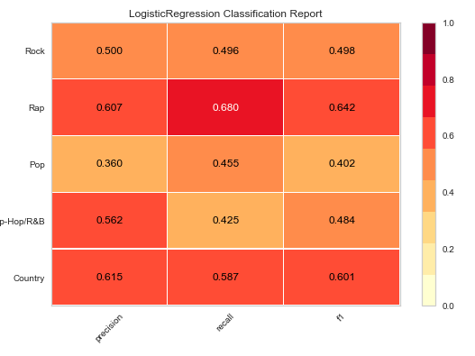The table below combines information from the plots above to show precision and recall by genre in a bit more detail.
| Genre | # of Songs | # Classified as Genre | # Correctly Classified | Recall | Precision |
|---|---|---|---|---|---|
| Country | 109 | 104 | 64 | 59% | 62% |
| Hip-Hop/R&B | 106 | 80 | 45 | 42% | 56% |
| Pop | 88 | 111 | 40 | 45% | 36% |
| Rap | 75 | 84 | 51 | 68% | 61% |
| Rock | 115 | 114 | 57 | 50% | 50% |
There are a couple interesting findings that can be discerned by looking at the plots and table. As mentioned earlier, Rap and Hip-Hop/R&B have similar vocabularies. The fact that the model was not able to fully distinguish between these two genres is not surprising. That said, Rap does have a recall of 68% - the highest of any genre. 51 of the 75 Rap songs in the test set were classified as Rap by the logistic regression model. At 61%, Rap also has the second-highest precision of any genre. Of the 84 songs classified as Rap, 51 were actually Rap songs. The biggest discrepancies were that 16 Rap songs were classified as Hip-Hop/R&B and 27 Hip-Hop/R&B songs were classified as Rap.
Random Forest
Another technique that was employed was Random Forests. We believed that having an ensemble of classifiers would improve the accuracy rate by correctly classifying the hard cases. Some of the hyperparameters that were tuned through cross-validation were the depth of the trees, how many features were looked at during each random split, and how many trees were in the forest. The table below shows the range of values that were tried for different hyper-parameters.
| Hyper-Parameters | Values |
|---|---|
| Number of Trees in Forest | 30-80 |
| Depth of Trees | 11-15 |
| Features Considered at Each Split | √d and log2(d) where d is dimension of feature vectors |
| Grams | 1-6 |
As was the case with Logistic Regression, the accuracy of the Random Forest decreased as the gram length increased. Additionally, the accuracy increased as we decreased the max depth and increased the number of estimators, or number of trees in the forest. The best Random Forest we created involved using unigrams and having 80 trees in the model.
The picture below shows that a Random Forest with 80 trees that are fit on features derived from unigrams has an accuracy rate of 47%. Using bigrams or higher performed marginally better than random guessing.
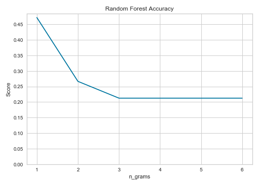As was the case with the Logistic Regression model, a deeper understanding of how the model is performing in certain scenarios can be understood by looking at the confusion matrix, precision, and recall associated with the Random Forest that was composed of 80 trees and used unigrams as features. The corresponding plots and table are shown below.
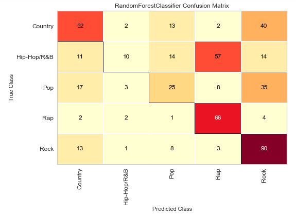 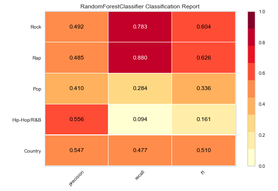| Genre | # of Songs | # Classified as Genre | # Correctly Classified | Recall | Precision |
|---|---|---|---|---|---|
| Country | 109 | 95 | 52 | 48% | 55% |
| Hip-Hop/R&B | 106 | 18 | 10 | 9% | 56% |
| Pop | 88 | 61 | 25 | 28% | 41% |
| Rap | 75 | 136 | 66 | 88% | 49% |
| Rock | 115 | 183 | 90 | 78% | 49% |
The Random Forest model definitely favored certain genres over others. It significantly under-classified songs as Hip-Hop/R&B and over-classified them as Rap or Rock. This is surprising. One would expect an ensemble of classifiers to have the ability to work through the similarities between genre vocabularies and distinguish the hard cases. However, as seen above, that does not appear to be the case.
The main thing that stands out is that the Random Forest did a poorer job distinguishing Hip-Hop/R&B and Rap than the Logistic Regression model. The Random Forest classified a song as belonging to the Rap category when it really was a Hip-Hop/R&B song 57 times. This was significantly more than the Logistic Regression model, which only made this mistake 27 times on the test set. The model’s difficulty in distinguishing between Rap and Hip-Hop/R&B is also reflected in the recall value for Hip-Hop/R&B and precision value for Rap.
The Random Forest model also had trouble distinguishing between Pop and other genres. This is reflected in Pop's low recall and precision scores.
Linear SVC
Seeing the relative success of Logistic Regression, we wanted to look at another linear classifier. We decided to try the Linear SVC, which is a type of SVM. As with Logistic Regression, we experimented with the regularization term. Here, we found that setting the C value to 0.1 for unigrams was most effective. We also looked at loss and maximum iterations. We found that squaring the loss function and reducing the maximum number of iterations worked best.
As with other models, we got the best results when working with unigrams. Model accuracy then decreased as the length of the n-grams increased.
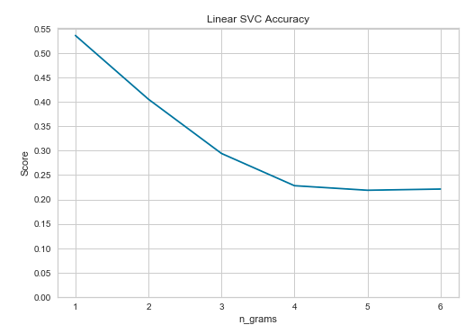As with the other models, we found looking at the confusion matrix, recall, and precision helpful for analysis.
Linear SVC was not prone to the over- or under-classification that the other models experienced. It slightly favored Rock, but for each genre, the number of songs classified as a given genre was within 14 songs of the number of songs actually of that genre in the test set.
| Genre | # of Songs | # Classified as Genre | # Correctly Classified | Recall | Precision |
|---|---|---|---|---|---|
| Country | 109 | 114 | 65 | 60% | 57% |
| Hip-Hop/R&B | 106 | 96 | 55 | 52% | 57% |
| Pop | 88 | 89 | 31 | 35% | 35% |
| Rap | 75 | 65 | 46 | 61% | 71% |
| Rock | 115 | 129 | 65 | 57% | 50% |
The Linear SVC model also did not have as much trouble distinguishing between Rap and Hip-Hop/R&B. Only 14 Hip-Hop/R&B songs were classified as Rap, and 19 Rap songs were classified as Hip-Hop/R&B. The recall for Hip-Hop/R&B and precision for Rap were higher in the Linear SVC model than in Logistic Regression and Random Forest indicating that more Hip-Hop/R&B songs were correctly classified as Hip-Hop/R&B and a greater proportion of the songs classified as Rap were actually Rap songs.
The Linear SVC model did still struggle with the Pop genre. Pop had both a recall and a precision of 35%. This is because the model classified Pop songs as Rock, Hip-Hop/R&B, and Country and also classified songs from each of these genres as Pop. This speaks to the universality of Pop as a genre.
Multinomial Naive Bayes
We trained a Multinomial Naive Bayes model using four approaches, bag-of-words, bag-of-words with GridSearch, TF-IDF, and TF-IDF with GridSearch, using a variety of hyperparameters including English stop-words, unigrams, word lemmatization, and word vectorization. GridSearch with 5 fold cross validation was used to improve the model’s performance, since it allows for additional hyperparameters and uses the most optimal hyperparameters for training. If the GridSearch performs worse than its original counterpart, this means that original was already using the most optimal hyperparameters.
Bag-of-Words
The bag-of-words approach was the simplest, most effective, producing the best accuracy score, and performed the quickest. This approach involves converting lyrics to numerical feature vectors by segmenting them into terms and by counting the term frequencies throughout each document. The terms are assigned an integer id, and only those that are unique are included in the vocabulary matrix.
Bag-of-Words with GridSearch
We replicated the bag-of-words approach and added GridSearch. The GridSearch hyperparameters included using the learning rates of 0.01 and 0.001 with 0.01 being the most optimal learning rate.
TF-IDF
A problem with the bag-of-words approach is that it will weigh longer documents and common words more heavily, than less common words, thus placing a greater emphasis on meaningless words such as “it”, “a”, “the”, etc. To reduce this problem, we use TF-IDF by calculating term frequencies and downscaling the terms appearing most frequently. We also lemmatize words by grouping together different inflected forms of the word so that they are analyzed as a single term. Lemmatization also adds context by grouping together words with similar meaning. Words that were less than 2 characters long and not alpha-numeric were filtered out along with words that appear in more than 40% of documents or less than 4 documents. A learning rate of 0.1 was used.
TF-IDF with GridSearch
We replicated the TF-IDF approach and added GridSearch. The learning rates of 0.01 and 0.001 were included as GridSearch hyperparameters with 0.01 yielding a better performance.
Results
As previously mentioned, the bag-of-words model outperformed the other models by obtaining the highest accuracy score of 60%. It outperformed its GridSearch counterpart and the TF-IDF with GridSearch model by 5% and out performed the TF-IDF model by 1%. This could be due to overfitting, since the bag-of-words approach is more likely, than any of the other models, to contain common words which it weighs more heavily.
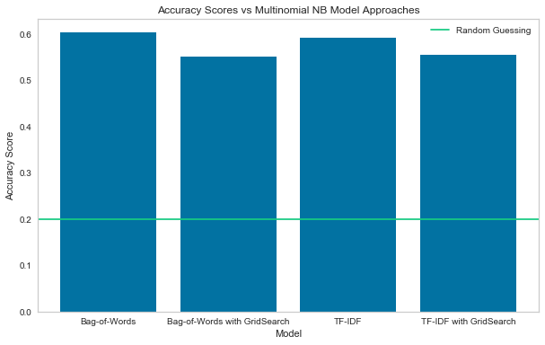The bag-of-words approach outperformed the other models in classifying Country and Hip-Hop/R&B, having classified correctly 75.8% and 62.5% of the lyrics respectively. The bag-of-words with GridSearch model performed the best in classifying Rap lyrics, achieving a recall of 77.4%. Although the TF-IDF approach achieved the second highest overall accuracy, it was only able to outperform other models in classifying Pop lyrics, achieving 38% recall, albeit all models performed poorly in classifying this genre.
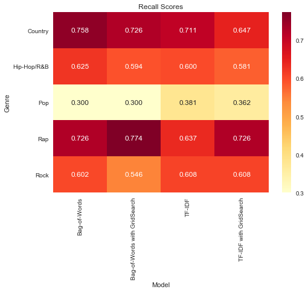Model Comparison
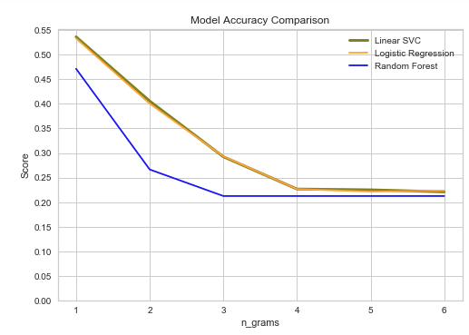In looking at the first three models side-by-side, we can see that Logistic Regression and Linear SVC performed similarly to each other while Random Forest performed notably worse. Multinomial Naive Bayes performed better than Logistic Regression or Linear SVC.
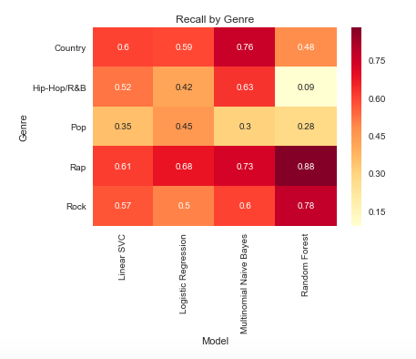The bag-of-words trained Multinomial Naive Bayes performed the best of all models in classifying Country, Hip-Hop/R&B, Rap, and Rock songs as such. All models struggled with classifying Pop songs, classifying a significant portion of Pop songs as Rock. No model classified even 50% of Pop songs as Pop.
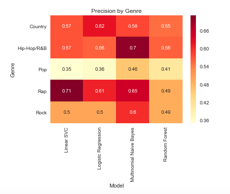The bag-of-words trained Multinomial Naive Bayes also had the best precision of all models for Hip-Hop/R&B, Pop, and Rock. Logistic Regression had better precision for Country songs, and Linear SVC had better precision for Rap songs.
We recommend using Multinomial Naive Bayes using bag-of-words for genre classification. Interestingly, this is also the model that sklearn recommends for text classification in general.
Unsupervised Learning
For the last part of the pipeline, we used OpenAI’s GPT-2 model to generate lyric outputs based on the lines of text that were provided by the user. GPT-2 is an open sourced model that is a transformer based and is designed to try to represent language as a whole. This makes it able to perform well in a lot of different types of tasks, but we used it for its text generation capabilities. While it is pretrained on a giant corpus of text from the internet, we fine-tuned the model on song lyrics in order to get believable results. Because this task is unsupervised, there is no real measure of quality, except for how believable the lyrics look to the naked eye. The model also adds unique value by its ability to not only learn how to string words together, but to also learn the structure of the document itself. As a result, you will see in the generations spots where it outputs words related to the structure like “chorus”. This adds believability to the output and shows its superiority to less complex models like n-grams.
For each of our five genres, we trained a different text generation model. In this way, once the input is classified, we can load the desired model and generate the rest of the song. Below we have included a word cloud visualization of a collection of generations from each genre. We did not include rap’s visualization due to the high frequency of curses and racial slurs, which are prevalent in the genre, but not necessarily appropriate for our paper. Each word cloud represents the most frequent words or phrases when generating. You will find an example of a generation for each genre in the appendix.
Looking at the sample generations in the appendix, we can see several characteristics that show the power of the GPT-2 model. First, you can see in the pop generation that our model can even generate Spanish! It does not have as much training on Spanish so the lyrics may not make much sense, but this would be fixed by adding more finetuning of the model with Spanish text. Either way, it is impressive that our model can generate lyrics in two languages. We see from the Country songs that there is a little bit of a rhyme scheme in the opening and that the song has a religious theme throughout. This is a feature we would expect to see in a country song, but not necessarily in the other genres. The first thing to notice in the rock generation is that there is a weird word in “ I’ll’eastern’’’’s’hundred’ “. This shows that our model isn’t perfect and sometimes does run into some weird patterns. Secondly, notice that the model keeps track of structure throughout the lyrics! We see that there are 4 verses in order and there is a chorus that shows up multiple times throughout the song. This shows how powerful this model can be as it can not only learn how to make words, but learn the structure of these songs as well. We see here that we can even generate artists, with this one being a collaboration between J.Cole and Beyonce. We not only see it generates artists names, but also the lyrics include a Jon Stewart reference so it is trying to include pop culture references. Looking at the Rap generation, we see that these lyrics are very vulgar and contain modified racial slurs which appear a lot in raps. We also see that it talks a lot about getting money, guns, and Gucci which are stereotypes of rap. Interestingly enough it makes a reference to Kunta Kinte (the character from Roots) which shows that it has picked up on racial clues as well considering the rap field is dominated by African Americans.
We see in the word cloud some representation of love songs in phrases like perfect one and you’re perfect (the apostrophes were removed for representation in the picture, but have the apostrophes exist in the generation).
We see in the word cloud things like girl, sun, god, and change which are all common themes in country music.
We also see the rock words are very American themed with our generation talking about communism as well.
The word cloud is also very believable with hot chick and yung miami being big components of the visualization. We see a more sexual focus, which is expected compared to the other categories.
Results for Text Generation
In all, we are able to generate realistic lyrics based on a user’s input. While the text generation may not translate directly into a proper song, it does capture the style associated with each genre. It also outputs an appropriate structuring of the lyrics by breaking them up into introductions, verses, choruses, etc.
These generations are all made with no prompt, but you can easily add in a prompt when generating. This will set the first part of the output to be that prompt and then it will generate off of that. It will generate lyrics that relate to the prompt in a similar vein to how it can generate the same chorus in the beginning and end of a given output. This kind of generation is essential to our project and allows users to generate sample lyrics based on any input they want. Some examples of prompted generation are also included in the appendix. We chose prompts of lyrics from songs in the genre to show the difference between what our model generates and what the actual artists wrote.
You can also adjust the “temperature” when generating. This temperature corresponds to the temperature when doing annealing and higher values allow you to get more interesting generations although they are also more prone to nonsense words like we have seen. These were all generated with a temperature of 0.8 (max is 1), which is pretty high. This was done using a wrapper called simple GPT-2, which was developed by Max Woolf.
The GPT-2 model uses a transformer based architecture to model the conditional probability p(output|input). By modeling this for all words in the vocabulary, the model has an incredible capacity to predict all kinds of word generations. This also allows it to generate the structure we saw earlier because it learns that verse 1 should have a higher probability of being generated near the beginning than near the end. When generating, the model samples from this probability distribution in order to generate the new output. The temperature setting helps control the randomness in the sampling. For a high temperature, the model is much more likely to generate words that have low probabilities. This may sacrifice coherence for more unique outputs. Low temperatures, however, tended to produce output that was very monotonous. It generates a few lines and then repeats them for the rest of the text.
As a result, we settled on a temperature of 0.8 for the output from looking at the generations. Setting the temperature too low resulted in the model offering very few unique lines, while setting the max temperature of 1 caused the model to spit out lyrics that were not as coherent. Through experimentation, we found that setting the temperature between 0.7 or 0.8 resulted in an interesting and coherent output.
Future Work and Considerations
Our work can be built upon in several ways. Our genre classification model utilized tokenized song lyrics as the basis of its feature space. However, different types of features could be extracted from song lyrics. Possible descriptors could include song structures and lyrical semantics such as the distribution of the parts of speech that are present within a song. Also, research has shown that combining audio features can significantly increase the performance of models such as Random Forests (Tsaptsinos 2). Our project focused only on text lyrics since we did not have recordings of the actual music associated with each of the songs in our dataset.
Also, in our project our dataset consisted of five genres. Various researchers have found it more difficult to obtain higher accuracy rates when the number of categories increases(Tsaptsinos 2). Doing further experiments on datasets with more genres will help provide an understanding whether the models we developed in this project generalize for other genres that were not a part of our experiments.
The biggest limitation of the text generation lies in the fact that the model can generate lyrics, but not the music behind them. If we annotate our training set with the musical notes which accompany the lyrics then we may be able to get the model to learn to not only generate lyrics, but also a musical arrangement to accompany them. This would hopefully inform the lyric generation models so that they make more sense in the context of an actual song (i.e. rhyme schemes for rap). This would not be a small undertaking, but it could improve the final output of the model.
Overall Conclusion
We were able to come up with a general pipeline that would allow someone to explore how a certain line or lines would fit into the world of music today.
Our classification models were able to classify a song’s genre based on its lyrics with varying levels of accuracy. After tuning some of the hyper-parameters, we were able to obtain an accuracy rate in the low to mid 50s using Logistic Regression and Linear SVC models. This number crept up to nearly 60% when we employed a Multinomial Naive Bayes model. This is a significant improvement from random guessing since a random guess would be right 20% of the time in the long run since our dataset consisted of five genres.
Based on our ability to classify song genres, we were then able to move to the next step of text-generation. By accepting user inputted song lyrics, our classification model would first try to predict what genre the user was interested in. Based on this result, an appropriate text-generation model was loaded and run to create the rest of the lyrics. We believe our final pipeline would enable listers to explore their musical interests, thus creating a larger fan base for the music industry as a whole.
References/Brief Literature Review
- Tsaptsinos, Alexandros. “Music Genre Classification by Lyrics Using a Hierarchical Attention Network.” https://web.stanford.edu/class/archive/cs/cs224n/cs224n.1174/reports/2728368.pdf.
This article talks about past research that has been done for genre classification and what their strengths and weaknesses were.
- Fell, Michael, and Caroline Sporleder. “Lyrics-Based Analysis and Classification of Music.” https://www.aclweb.org/anthology/C14-1059.pdf.
This article discusses an approach to doing genre classification based on text lyrics. It also mentions some factors that should be taken into consideration when preprocessing the data and running it through classification models.
- Webster, Jack. “Music on-Demand: A Commentary on the Changing Relationship between Music Taste, Consumption and Class in the Streaming Age.” https://journals.sagepub.com/doi/pdf/10.1177/2053951719888770.
This analysis focuses on how the advent of streaming services has affected the music industry and social norms.
- Datta, Hannes, et al. “Changing Their Tune: How Consumers' Adoption of Online Streaming Affects Music Consumption and Discovery.” 9 May 2017, https://www.gsb.stanford.edu/sites/gsb/files/publication-pdf/spotify_web.pdf.
The authors focus on how the wide-spread adoption of streaming services has led to an expansion within the music sector.
- Radford, A., Wu, J., Child, R., Luan, D., Amodei, D. & Sutskever, I. (2018). Language Models are Unsupervised Multitask Learners https://cdn.openai.com/better-language-models/language_models_are_unsupervised_multitask_learners.pdf.
This is the original paper for GPT-2 architecture. It explains the architecture of the model, how it was trained, and the results they found using it.
- Liang, Dawen, et al. “Music Genre Classification with the Million Song Dataset.” http://citeseerx.ist.psu.edu/viewdoc/download?doi=10.1.1.700.2701&rep=rep1&type=pdf.
This paper talks about the challenges of extracting features from text lyrics in a scalable manner.
- Gatt, Albert, and Emiel Krahmer. “Survey of the State of the Art in Natural LanguageGeneration: Core Tasks, Applications and Evaluation.” https://jair.org/index.php/jair/article/view/11173/26378.
This paper talks about unique applications of text generation and discusses changes in this area over the last two decades.
Appendix
Pop Generation
Letra de Ni Tú Ni Yo (Letra de Ni Tú Ni Yo) Ni Tengo que tráate la calle de tomain
Despacito dale pa´ arriba
Yo sé que tu ni por la mía
Déjame sentirte quiero deleitarme en tu lista de habitación
Tráamentos más de dos después de dos
Por pon de manda y el mejor Sons and Queens
Ojala
Pabllo ver baila pabllo ver baila
Vamos a mí se llama
Una santa cómo se llama
Y yo y yo y es que mira es
Una santa cómo se llama
Una santa cómo se llama
Una
Vamos a mí se llama
Una santa cómo se llama
Y yo y yo y es que mira es
Una santa cómo se llama
Una santa cómo se llama
Una
[Bridge: Enrique Iglesias]
Despacito
Porque el amor no me besa noche
Porque el amor no me besa noche
Despacito
Quiero respirar tu cuello despacito
Que el corazón conmigo yo te viera
Para para el paré yo te siente
Y que eres posesiva en la vida
Una noche dos noches sólo a mi belle de ti
La noche he va el sugo provocar
A mí se nota me dejes en ti
Todos mis sentidos van pidiendo
Revolto dalejos en tras de ti
Que el corazón conmigo yo te viera
Para para el paré yo te siente
Y que eres posesiva en la vida
Una noche dos noches sólo a mi belle de ti
La noche he va el sugo provocar
A mí se nota me dejes en ti
Todos mis sentidos van pidiendo
Revolto dalejos en tras
Tratos militaritaritarirte
[Outro: Enrique Iglesias]
Ni Tú Ni Yo
Ni Tú Ni Yo
Porque el amor no me besa noche
Porque el amor no me besa noche
Despacito
Que el corazón conmigo yo te viera
Para para el paré yo te siente
Y que eres posesiva en la vida
Una noche dos noches sólo a mi belle de ti
La noche he va el sugo provocar
A mí se nota me dejes en ti'
Country Generation
Saw a man on the sidewalk
Hunger written in red chalk
Not a care in the world, just a need to
They take it down and wean us off
It’s had-to-do-me, get-to-know-me
Life is good today, it’s supposed to be, it’s supposed to be
But people get sick and tired of being where they are
Shes got the bullets, they got the seatsbelt
Shes got the bottles full
Yeah, everybody wants some cheap fun
But there’s been a few of the best years that I ever known
"The mean winters that we've been here a while",We only get lost in summer
And I feel like I have to say it
"But that doesn't make me less of a man",Yeah, there’s been a few of the best years
"I've been living my best life", "I’m living my best life", "But I don't know how I did it, just playboutisms don’t make no sense",And I’m only here because of you
I don’t know how, but I do know how I did it
I just pray you know it
"Forget what themthspeak you're used to",It’s just scripture dark and all-consuming
And it’s on a nightly basis, with no time to spare
I just pray you know it
[Chorus]
Lord knows I’ll be strong
Even when my bones break
I’ll be as strong as I’m able to hold
Stood in the past, I know the present
And the very next day I will be, will be
The fighter I was before I lost my mind
The one who loves me and gives his life for me
This is it, this is it
Shes got the bullets, they got the seatsbelt
They got the bottles full
Yeah, everybody wants some cheap fun
But there’s been a few of the best years that I ever known
"The mean winters that we've been here a while",We only get lost in summer
And I feel like I have to say it
"But that doesn't make me less of a man",Yeah, there’s been a few of the best years
"I've been living my best life", "I’m living my best life", "But I don't know how I did it, just playboutisms don’t make sense",And I’m only here because of you
I don’t know how, but I do know how I did it
I just pray you know it
"Forget what they're gonna call my defense",It’s first thing in the morning, three things in the middle of a speech
"And I'll be quick when they say that,"Yeah, I'm ready to roll, ready to roll",[Bridge]
Yeah, when the sun sets
And our conversation is as one-sided as it gets
"But we're just like everybody else, yeah", "And I’m just asking you, I think it's time",[Chorus]
Lord knows I’ll be strong
Even when my bones break
I’ll be as strong as I’m able to hold
Stood in the past, I know the present
And the very next day I will be
The fighter I was before I lost my mind
The one who loves me and gives his life for me
This is it, this is it
"Oh, this isn'trock no more",So come on, come on, come on
[Outro]
Yeah, just ask anyone
I’m just asking you
Just asking you
Just asking you'
Rock Generation
I’m a stone of sunlight
I stride alone
I stride straight
I stride tall
I stride up
I stride down
I stride up
I’ll’eastern’’’’s’hundred’
(Well, kinda, yeah)
[Verse 1]
"I've been roamin' around", "Think I'm a no-go", "I've been sharin' my words, makin' no moves", "Got a no-holds-barred belly, I'm sharin' my words",Not everything’s so fine as day when I live
[Verse 2]
This ancient tongue of ours is still down
Stuttering, thirst, cold feet
And the elders talk louder than me
[Chorus]
"I'm a razorblade", "I'm a pocket knife", "I'm a pump foward", "I'm a-fire, I'm a spineless", "I'm a razorblade",[Verse 3]
The beast inside you is ferocious
Take it's time just show me
The moment when you shine, it’s golden
But the crystal ball
It’s a metaphor, it’s a metaphor
The beast inside you is ferocious
Take it's time just show me
The moment when you shine, it’s golden
But the crystal ball
It’s a metaphor, it’s a metaphor
[Chorus]
"I'm a razorblade", "I'm a pocket knife", "I'm a nincompoop", "I'm a lightning rod",[Instrumental Bridge]
[Verse 4]
This angry insurrection
Is gonna be a long day
All the sinners burned into the ground
"But boys, don't you worry, you'll know", "I'm not saintly, I'm not saintly",[Chorus]
"I'm a razorblade", "I'm a pocket knife", "I'm a nincompoop", "I'm a lightning rod", "I'm a lightning rod",[Verse 5]
This is gonna be a long night
There’s gonna be no sky, no time
Just burn this ship down, over this hill
This ship down, this hill
"Don't go! Don't go!", "Go!! The Communist Guard don't welcome outside",[Chorus]
"I'm a razorblade", "I'm a pocket knife", "I'm a nincompoop", "I'm a lightning rod", "I'm a lightning rod", "Don't go! Don't go!", "Go!! The Communist Guard don't welcome outside",[Outro]
"I'm a razorblade", "I'm a pocket knife", "I'm a nincompoop", "I'm a lightning rod", "I'm a lightning rod", "Don't go! Don't go!", "Go!! The Communist Guard don't welcome outside", "I'm a razorblade!"
Hip-Hop Generation
Outta nowhere, I’m rockin ‘em up
I’m so used to they stares that we get
And they gotta laugh at us, and they gotta break it down
Out of all the girls, this shit get boring
And it’s so hard to find a nerdy in this building
I’m so used to they stare that we get
And they gotta laugh at us, and they gotta break it down
[Verse 1: Beyoncé]
Baby, I swear we up in there
"They lookin’ and singin’ and shoutin' out comin' Jon Stewart",I know they want a verse, but yeah, we up in there
"Yeah, she know I'm serious, so I'm baby gohead and pass", "Yeah, she know I'm serious, so I'm baby gohead and pass", "I'm up in there, I'm tryna get my shit down, what's happenin'?",Tell me, do I really wanna get up in your head?
"Do I really wanna get up in your head? No, I don't think so", "Let's get this understood, can't get no sleep",Oh, baby, you my favorite, my main chick
"You taste so right, I taste so wrong, yeah, yeah", "Tell me, is you tired?", "No, I'm up, what's happening behind the scenes?", "Are you cryin’? Oh, no", "What's happening behind the scenes, what's up in you, oh",[Chorus: Beyoncé & J. Cole]
They say, "Love is a game, not a friend",And it is up to you
If you take the time
To see love and not hate
Open your heart like that of a baby
Can that boy J. Cole get a little jealous?
"That's the sound of romance", "Stay faithful, we don't stop, oh",Love is a game
Not a friend, no, no
[Verse 2: J. Cole]
Yeah, yeah, you my new friend, yeah, you my new boo
"Don't back down, no, no, no, don't fall for this new guy",Your new boo will die in a minute, J. Cole will be the new opp
"Girl, I'm just tryna make you mine, I'm just tryna make you mine", "It's not a love thing, just a love thing, no",Love is about patience, J. Cole to my face
Love is about life, you and me
"Keep tryin' to minimize it",Keep tryna overlook it
[Chorus: Beyoncé]
They say, "Love is a game",Not a friend, no, no
"And it's up to you",If you take the time
To see and to listen
"And don't lose your mind", "'Cause if you don't like it",Then you're mine, baby, whoever ends up winning
"'Cause whoever ends up winning gets to say they don't like me",[Verse 3: J. Cole]
"What wein' man? What wein' man?", "What wein' man? Let's take a look at the cloth that's our business",We start with a photograph
Then we flip it, then we take a look
At the garment that you like
Then we put it on and later we fold it
Then we send it back
"We're not made for each other, we're made to fight", "We're made for this game, man, you better buckle up", "Machine gun to your body, I'm gonna attack",Do my thing machine, rock bottom and goldeneye
Then I fold it
Goldeneye
"Blackberries, I'ma jam it in",Then I tip it over so he get to licking it
I brought a lotta friends with me
"I'ma sendem out wayside to get people",But of course we fo the troll
"We're made to go", "If you're with us, then I'm with you", "I'm with you, girl, I don't be taming you",Go
[Chorus: Beyoncé + J. Cole]
They say, "Love is a game"
"And it's up to you",If you choose to do it for me
"That's a choice, a choice",Make you who I want you to be
"If you say you don't want me",I will never, anywhere
"Boy, I'm gon' make you what you want me to be", "If you say you don't want me",I will never,
Rap Generation
DISCLAIMER: VULGAR
Quickie, quickie, ho",Who in the vicinity of ninety-five and eighty
is ready to pounce
"The industry's favorite blunt, Tricep and her toe",Shoot like a war, with or without the gas
"With fifty shells, the bitch's name's Kunta Kinte",And she want to get me
"But I'm too late, my Glock's stuck",And I got another Glock in my vehicle
So, ho, switch it up
"I'll get to floor, I'm a fractional reserve", "I'm the spitting image of Anastasio Sommerta", "Glock-booted, with six clip options", "With a .45 in my waist, duffel bag's full", "With three grams of spent duffel", "Stinger'd, Torso-socked, braided, braided, duffel'd", "Glock-booted, fucked up, Valentino's on the beat", "Glock-booted, fucked up, Valentino's on the beat", "Glock-boot, fucked up, Valentino's on the beat",[Verse 3]
I picked up the case, stripped it down and took it with me
"While I was there saw a nigga smoking on the corner", "A South-side ma'fuckin nigga who used to sell glitchin' knock-knocks", "As we bust us in the head, see Gucci boys in Smith's",With hundreds of thousands on my European bank
"I don't check no more than thou doest self-defense", "While I'm there bustin' in my mohican",Sasquatch clique growing every time this shit played
Young nigga, my biggest fan is Penya
"Makin' noise when you see him breakin' in", "With a nine-fo' and a half G'd up", "That snitch got noise so I put mines in", "That's a G'd up, G'd up", "I'm the nigga, the devil's the story (why)", "Glock-booted, bare-knuckle jig-blin' (it's a weekend, mind)", "Glock-booted, bare-knuckle jig-blin' (it's a weekend, mind)", "Glock-booted, bare-knuckle jig-blin' (it's a weekend)",[Chorus]
"Yeah, baby, I'm gettin' huffy", "I'm gettin' up, baby, yeah, I'm gettin' up", "I'm gettin' up, baby, yeah, I'm gettin' up", "I'm gettin' up, baby, yeah, I'm gettin' up", "I'm gettin' up, baby, yeah, I'm gettin' up", "I'm gettin
up, baby, yeah, I'm gettin' up",[Verse 4]
"Yeah, baby, I said fuck you, po' makin' it (it's your first, baby)", "I'll take you wherever you go, yeah, I say)", "You don't have a home? Take it home and take it home (baby)", "You don't have a home? No, you out of town, baby", "And if you ain't got a place to call it kiddie, I got a place to call it", "Now get to bustin' yo' head in the attic, I'll take ya there", "Bitch runnin' with the key, the key to the attic",Catch a cold day in the cold world
Where the breezes breath they through jeans and t-shirt
"And if you ain't got a home, I got a place to call it", "Now get to bustin' yo' head in the attic, I'll take ya there", "Bitch runnin' with the key, the key to the attic",Catch a cold day in the cold world
Where the breezes breath they through jeans and t-shirt
"And if you ain't got a home, I got a place to call it",[Chorus]
"Yeah, baby, I'm gettin' up", "I'm gettin' up (baby, I'm gettin' up)", "I'm gettin' up (baby, I'm gettin' up)", "I'm gettin' up (baby, I'm gettin' up)"
Context Provided
Country with prompt: “And a little bit of chicken fried. A cold beer on a Friday Night”
And a little bit of chicken fried. A cold beer on a Friday night. A big bad burger and a little onion rings. Those are the words that I remember
They were a night we didn’t forget, a night that we didn’t forget
We would never forget, we would never forget
For we would never forget
Every little thing
We would never forget, we would never forget
We would never forget'
Rock with prompt: “We will we will rock you. Buddy you’re a boy”
We will we will rock you. Buddy you're a boy, Will you run?
[Verse 1]
"Lay you on my mind and I can't see how",We can beat you, babe, up and down the highway
"One more thing, I don't wanna hear you scream",And so this time was a breeze
We held each other, we held each other
"What I know, I don't know",We will one day, we will one day rock
[Verse 2]
Bay under the bridge
Candyman, Mickey and Bill
Troubadour on the corner
J. Edgar Hoover
On and on she goes
With him juries stretch out
To catch the bad guys
And to shoot him when she wants
[Verse 3]
Well she was out of her mind
If she wanted to
She could find some victory for herself
By the time she got to Omaha
[Outro]
And she could tell
All the good deeds
That were practiced
By those who smiled
"She didn't want to go home",[Outro]
We we we we we we we we
We we we we we we we we we
We we we we we we we we we
[Verse 1]
Bay under the bridge
Candyman, Mickey and Bill
J. Edgar Hoover
On and on she goes
With him juries stretch out
To catch the bad guys
To catch the good guys
To catch the bad guys
To catch the good guys'
Oh we we we we we we we we
Woah'
Pop generation with prompt: “I’m a sucker for you. Say the word and I’ll go anywhere blindly”
I'm a sucker for you
You say the word and I'll go anywhere blindly "You're the only one", "Give me a time and place and I'll do it forever", "I'm a sucker for you, you say the word and I'll go anywhere",[Verse 1: Nick Jonas]
"I don't want no trust fund baby",I want a man who takes care of me
"I've got a dog, I've got a cat, I've got a boy", "I've got a girlfriend, I've got a boy", "I've got a brother with another girl, she's only got one name", "I'ma tell him I'm sorry for making fun of me", "But I'd rather not be rude", "So I can come home with you tonight",[Pre-Chorus: Nick Jonas]
"I'm sorry for the drinks you've been throwin' at me", "For the feelings you've been givein' to me", "And for every awkward moment you've been goin' through", "I'm sorry for the time you've been goin' through", "I'm sorry for the feelings you've been givein' to me", "And I'm sorry for the boy you're playin' with now and then", "I'm sorry for the time you've been playin' through", "I'm sorry for the feelings you've been givein' to me", "And I'm sorry for the boy you're playin' with now and then",[Chorus: Nick Jonas]
"I'm sorry, I'm sorry (I'm sorry), I'm sorry (I'm sorry)", "Oh, I'm sorry, I'm sorry (I'm sorry), I'm sorry (I'm sorry)", "Oh, I'm sorry, I'm sorry (I'm sorry), I'm sorry (I'm sorry)"